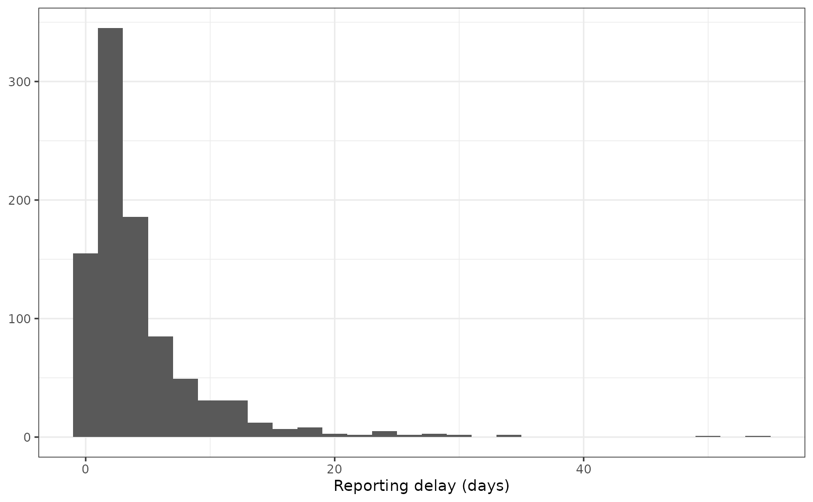

Reporting delays and right-truncation of line list data
Source:vignettes/reporting-delays-truncation.Rmd
reporting-delays-truncation.RmdIf you are unfamiliar with the {simulist} package or the
sim_linelist() function Get Started
vignette is a great place to start.
This vignette covers reporting delays in line list data, how to use
{simulist} to produce line list data with a delay between symptom onset
and reporting, explains right truncation in outbreak data sets and shows
how to use the truncate_linelist() function in {simulist}
to augment a simulated line list to resemble real-time outbreak
data.
Reporting delays
Reporting delays in line list data during an infectious disease outbreak refer to the time lag between when an event (e.g., infection, symptom onset, or hospitalisation) occurs and when it is officially recorded or reported. These delays can arise from factors like diagnostic testing turnaround times, administrative processing, or delayed healthcare-seeking behaviour. In line list data sets, these delays are captured as separate times/dates for different event types, such as the dates of symptom onset, specimen collection, laboratory confirmation, or case reporting. For each case, the delay is the difference between these times/dates, allowing researchers to quantify and adjust for reporting delays when analysing outbreak dynamics. Accurate recording of these dates is crucial for reconstructing the epidemic curve and assessing the timeliness of public health responses.
In {simulist}, sim_linelist() outputs a line list with a
date of reporting ($date_reporting column), which by
default will be identical to the date of symptom onset
($date_onset). However, it is possible to parameterise a
reporting delay that can be used by sim_linelist() to
simulate a delay between symptom onset and reporting. In {simulist} we
assume that the reporting delay is the delay between symptom onset and
it being reported, it does not reflect reporting of hospitalisation or
outcome times.
library(simulist)
library(epiparameter)
library(tidyr)
library(dplyr)
#>
#> Attaching package: 'dplyr'
#> The following objects are masked from 'package:stats':
#>
#> filter, lag
#> The following objects are masked from 'package:base':
#>
#> intersect, setdiff, setequal, union
library(ggplot2)
library(incidence2)
#> Loading required package: gratesFirst we load the required delay distributions using the {epiparameter} package.
contact_distribution <- epiparameter(
disease = "COVID-19",
epi_name = "contact distribution",
prob_distribution = create_prob_distribution(
prob_distribution = "pois",
prob_distribution_params = c(mean = 2)
)
)
#> Citation cannot be created as author, year, journal or title is missing
infectious_period <- epiparameter(
disease = "COVID-19",
epi_name = "infectious period",
prob_distribution = create_prob_distribution(
prob_distribution = "gamma",
prob_distribution_params = c(shape = 3, scale = 2)
)
)
#> Citation cannot be created as author, year, journal or title is missing
onset_to_hosp <- epiparameter(
disease = "COVID-19",
epi_name = "onset to hospitalisation",
prob_distribution = create_prob_distribution(
prob_distribution = "lnorm",
prob_distribution_params = c(meanlog = 1, sdlog = 0.5)
)
)
#> Citation cannot be created as author, year, journal or title is missing
# get onset to death from {epiparameter} database
onset_to_death <- epiparameter_db(
disease = "COVID-19",
epi_name = "onset to death",
single_epiparameter = TRUE
)
#> Using Linton N, Kobayashi T, Yang Y, Hayashi K, Akhmetzhanov A, Jung S, Yuan
#> B, Kinoshita R, Nishiura H (2020). "Incubation Period and Other
#> Epidemiological Characteristics of 2019 Novel Coronavirus Infections
#> with Right Truncation: A Statistical Analysis of Publicly Available
#> Case Data." _Journal of Clinical Medicine_. doi:10.3390/jcm9020538
#> <https://doi.org/10.3390/jcm9020538>..
#> To retrieve the citation use the 'get_citation' functionSetting the seed ensures we have the same output each time the vignette is rendered. When using {simulist}, setting the seed is not required unless you need to simulate the same line list multiple times.
set.seed(123)Using a simple line list simulation without specifying a reporting delay will produce reporting times identical to symptom onset times:
linelist <- sim_linelist(
contact_distribution = contact_distribution,
infectious_period = infectious_period,
prob_infection = 0.5,
onset_to_hosp = onset_to_hosp,
onset_to_death = onset_to_death
)
identical(linelist$date_onset, linelist$date_reporting)
#> [1] TRUEThe reporting delay can be specified as a (random) number generating
function to the reporting_delay argument in
sim_linelist().
In this example we assume the reporting delays are distributed
according to a lognormal distribution with parameters:
meanlog = 1 and sdlog = 1 (or a mean of
approximately 4.5 days and standard deviation of 5.9 days).
linelist <- sim_linelist(
contact_distribution = contact_distribution,
infectious_period = infectious_period,
prob_infection = 0.5,
onset_to_hosp = onset_to_hosp,
onset_to_death = onset_to_death,
reporting_delay = function(x) rlnorm(n = x, meanlog = 1, sdlog = 1)
)
head(linelist)
#> id case_name case_type sex age date_onset date_reporting
#> 1 1 Yoonus al-Azam suspected m 51 2023-01-01 2023-01-07
#> 2 2 Kristina Clark confirmed f 53 2023-01-04 2023-01-06
#> 3 3 Karen Meehan confirmed f 16 2023-01-05 2023-01-20
#> 4 4 Ritika Brandenburger suspected f 41 2023-01-05 2023-01-09
#> 5 5 Steven Kaliski confirmed m 4 2023-01-04 2023-01-09
#> 6 6 Keely Atene suspected f 68 2023-01-05 2023-01-12
#> date_admission outcome date_outcome date_first_contact date_last_contact
#> 1 2023-01-03 died 2023-01-26 <NA> <NA>
#> 2 <NA> recovered <NA> 2022-12-28 2023-01-03
#> 3 <NA> recovered <NA> 2022-12-29 2023-01-06
#> 4 <NA> recovered <NA> 2022-12-31 2023-01-05
#> 5 <NA> recovered <NA> 2023-01-02 2023-01-05
#> 6 <NA> recovered <NA> 2023-01-02 2023-01-06
#> ct_value
#> 1 NA
#> 2 26.1
#> 3 26.6
#> 4 NA
#> 5 25.0
#> 6 NAHere from the first 6 rows of the line list you can see differences
between the $date_onset column and the
$date_reporting column.
tidy_linelist <- linelist %>%
pivot_longer(
cols = c("date_onset", "date_reporting", "date_admission", "date_outcome")
) %>%
mutate(ordering_value = ifelse(name == "date_onset", value, NA)) %>% # nolint consecutive_mutate_linter
mutate(case_name = reorder(case_name, ordering_value, min, na.rm = TRUE)) # nolint consecutive_mutate_linter
ggplot(data = tidy_linelist) +
geom_line(
mapping = aes(x = value, y = case_name),
linewidth = 0.25
) +
geom_point(
mapping = aes(
x = value,
y = case_name,
shape = name,
col = name
), size = 2
) +
scale_x_date(name = "Event date", date_breaks = "week") +
scale_y_discrete(name = "Case name") +
scale_color_brewer(
palette = "Set1",
name = "Event type",
labels = c("Date Admission", "Date Onset", "Date Outcome", "Date Reporting")
) +
scale_shape_manual(
name = "Event type",
labels = c(
"Date Admission", "Date Onset", "Date Outcome", "Date Reporting"
),
values = c(15, 16, 17, 18)
) +
theme_bw() +
theme(legend.position = "bottom", axis.text.y = element_text(size = 4))
#> Warning: Removed 1519 rows containing missing values or values outside the scale range
#> (`geom_line()`).
#> Warning: Removed 1519 rows containing missing values or values outside the scale range
#> (`geom_point()`).![A dot plot with the event dates in the line list plotted a points on the figure, connected by horizontal lines. One row in the dot plot corresponds to one case (i.e. one row in the line list). The y-axis label is 'Case name', and the x-axis label is 'Event date'. The event types are 'Date admission' (red square), 'Date Onset' (blue circle), 'Date Outcome' (green triangle), and 'Date Reporting' (purple diamond). The plot shows the distribution of delay times between each event for each individual in the line list, with the y-axis order by earliest date of symptom onset at the bottom.](reporting-delays-truncation_files/figure-html/plot-linelist-events-1.png)
If we plot the difference between the date of symptom onset and reporting then, as expected, the distribution is roughly lognormally distributed.
ggplot(data = linelist) +
geom_histogram(
mapping = aes(x = as.numeric(date_reporting - date_onset)),
binwidth = 2
) +
scale_x_continuous(
name = paste0(
"Reporting delay (",
attr(linelist$date_reporting - linelist$date_onset, "units"),
")"
)
) +
theme_bw() +
theme(axis.title.y = element_blank())
If instead of a variable reporting delay you want to simulate a fixed
reporting delay, for example, the date of reporting is always 5 days
after the date of symptom onset, then a different function can be
supplied. One option is to set the parameter that controls the variance
of the probability distribution to zero (in the case of the lognormal
distribution, setting sdlog = 0), but a simpler and more
readable option would be to give a number generating function that
always returned 5.
We once again simulate to produce a line list with a fixed reporting delay.
linelist <- sim_linelist(
contact_distribution = contact_distribution,
infectious_period = infectious_period,
prob_infection = 0.5,
onset_to_hosp = onset_to_hosp,
onset_to_death = onset_to_death,
reporting_delay = function(x) rep(5, times = x)
)
head(linelist)
#> id case_name case_type sex age date_onset date_reporting
#> 1 1 Caleb Froome confirmed m 47 2023-01-01 2023-01-06
#> 2 2 Zubair el-Kalil probable m 41 2023-01-07 2023-01-12
#> 3 3 Cameron Williams probable m 79 2023-01-09 2023-01-14
#> 4 4 Aiyana Garcia confirmed f 70 2023-01-10 2023-01-15
#> 5 6 Miguel Line-Torres suspected m 50 2023-01-10 2023-01-15
#> 6 7 Teagan Dixon confirmed f 80 2023-01-10 2023-01-15
#> date_admission outcome date_outcome date_first_contact date_last_contact
#> 1 2023-01-05 died 2023-01-26 <NA> <NA>
#> 2 <NA> recovered <NA> 2022-12-26 2023-01-02
#> 3 <NA> recovered <NA> 2023-01-03 2023-01-11
#> 4 <NA> recovered <NA> 2023-01-03 2023-01-10
#> 5 <NA> recovered <NA> 2023-01-07 2023-01-11
#> 6 2023-01-13 died 2023-01-30 2023-01-05 2023-01-10
#> ct_value
#> 1 23.6
#> 2 NA
#> 3 NA
#> 4 28.2
#> 5 NA
#> 6 26.9
linelist$date_reporting - linelist$date_onset
#> Time differences in days
#> [1] 5 5 5 5 5 5 5 5 5 5 5 5 5 5 5 5 5 5 5 5 5 5 5 5 5 5 5 5 5 5 5 5 5 5 5 5 5
#> [38] 5 5 5 5 5 5 5 5 5 5 5 5 5 5 5 5 5 5 5 5 5 5 5 5 5 5 5 5 5 5 5 5 5 5 5 5 5
#> [75] 5 5 5 5 5 5 5 5 5 5 5 5 5 5 5 5 5 5 5 5 5 5 5 5 5 5 5 5 5 5 5 5 5 5 5 5 5
#> [112] 5 5 5 5 5 5 5 5 5 5 5 5 5 5 5 5 5 5 5 5 5 5 5 5 5 5 5 5 5 5 5 5 5 5 5 5 5
#> [149] 5 5 5 5 5 5 5 5 5 5 5 5 5 5 5 5 5 5 5 5 5 5 5 5 5 5 5 5 5 5 5 5 5 5 5 5 5
#> [186] 5 5 5 5 5 5 5 5 5 5 5 5 5 5 5 5 5 5 5 5 5 5 5 5 5 5 5 5 5 5 5 5 5 5 5 5 5
#> [223] 5 5 5 5 5 5 5 5 5 5 5 5 5 5 5 5 5 5 5 5 5 5 5 5 5 5 5 5 5 5 5 5 5 5 5 5 5
#> [260] 5 5 5 5 5 5 5 5 5 5 5 5 5 5 5 5 5 5 5 5 5 5 5 5 5 5 5 5 5 5 5 5 5 5 5 5 5
#> [297] 5 5 5 5 5 5 5 5 5 5 5 5 5 5 5 5 5 5 5 5 5 5 5 5 5 5 5 5 5 5 5 5 5 5 5 5 5
#> [334] 5 5 5 5 5 5 5 5 5 5 5 5 5 5 5 5 5 5 5 5 5 5 5 5 5 5 5 5 5 5 5 5 5 5 5 5 5
#> [371] 5 5 5 5 5 5 5 5 5 5 5 5 5 5 5 5 5 5 5 5 5 5 5 5 5 5 5 5 5 5 5 5 5 5 5 5 5
#> [408] 5 5 5 5 5 5 5 5 5 5 5 5 5 5 5 5 5 5 5 5 5 5 5 5 5 5 5 5 5 5 5 5 5 5 5 5 5
#> [445] 5 5 5 5 5 5 5 5 5 5 5 5 5 5 5 5 5 5 5 5 5 5 5 5 5 5 5 5 5 5 5 5 5 5 5 5 5
#> [482] 5 5 5 5 5 5 5 5 5 5 5 5 5 5 5 5 5 5 5 5 5 5 5 5 5 5 5 5 5 5 5 5 5 5 5 5 5
#> [519] 5 5 5 5 5 5 5 5 5 5 5 5 5 5 5 5 5 5 5 5 5 5 5 5 5 5 5 5Truncation
Right truncation in infectious disease data occurs when only individuals who have experienced a specific event by a certain time can be included in the linelist. This leads to an underestimate of recent cases or death, and is especially relevant for ongoing outbreaks where recent cases might not have been recorded. It can also happen if cases are no longer recorded after a certain point in time.
Right-truncated outbreak data, in particular line list data, can give the impression that the incidence is decreasing ( < 1), however this can be an artefact resulting from the fact the data is right-truncated, and the outbreak can be stable or growing.
By default {simulist} simulates an outbreak from start to finish.
Therefore, the line list or contact data contain all cases and outcomes.
In order to get data that is more representative of ongoing outbreak
dynamics where recent cases are not yet recorded and may be revised
upwards in the future the truncate_linelist() function can
be applied.
Re-simulating a simple line list using sim_linelist()
with a lognormal reporting delay with meanlog = 2 and
sdlog = 0.5.
# set seed to produce small line list
set.seed(3)
linelist <- sim_linelist(
contact_distribution = contact_distribution,
infectious_period = infectious_period,
prob_infection = 0.5,
onset_to_hosp = onset_to_hosp,
onset_to_death = onset_to_death,
reporting_delay = function(x) rlnorm(n = x, meanlog = 2, sdlog = 0.5)
)
# first 6 rows of linelist
head(linelist)
#> id case_name case_type sex age date_onset date_reporting
#> 1 1 Daiveante Labarrie confirmed m 59 2023-01-01 2023-01-05
#> 2 2 Phayd Garcia confirmed m 3 2023-01-07 2023-01-13
#> 3 3 Jenifer Castaneda suspected f 53 2023-01-01 2023-01-07
#> 4 8 Asya Woolfolk confirmed f 42 2023-01-14 2023-01-25
#> 5 9 Amaani el-Abdullah probable f 73 2023-01-03 2023-01-08
#> 6 10 Bella Nguyen confirmed f 89 2023-01-03 2023-01-11
#> date_admission outcome date_outcome date_first_contact date_last_contact
#> 1 2023-01-05 recovered <NA> <NA> <NA>
#> 2 <NA> recovered <NA> 2022-12-27 2023-01-06
#> 3 <NA> recovered <NA> 2023-01-01 2023-01-04
#> 4 <NA> recovered <NA> 2023-01-07 2023-01-11
#> 5 <NA> recovered <NA> 2022-12-25 2023-01-04
#> 6 <NA> recovered <NA> 2022-12-30 2023-01-02
#> ct_value
#> 1 22.3
#> 2 27.4
#> 3 NA
#> 4 28.0
#> 5 NA
#> 6 26.9The truncation time is the time/date at which we want to
take a snapshot of the line list and see what it would have looked like
on that day (i.e. real-time during the outbreak). By default
truncate_linelist() will truncate from 14 days before the
end of the outbreak (defined as the maximum date in the line list).
Here we define the time between the latest, or user-specified date, and the time point at which data is truncated as the truncation point.
In the plot below we show the truncation time as a vertical
line. If the date of reporting falls after the truncation time, then the
case is removed from the line list, if it falls before the date of
reporting but after the hospital admission and/or outcome date they are
set to NA.
tidy_linelist <- linelist %>%
pivot_longer(
cols = c("date_onset", "date_reporting", "date_admission", "date_outcome")
) %>%
mutate(ordering_value = ifelse(name == "date_onset", value, NA)) %>% # nolint consecutive_mutate_linter
mutate(case_name = reorder(case_name, ordering_value, min, na.rm = TRUE)) # nolint consecutive_mutate_linter
truncation_day <- 14
trunc_date <- max(tidy_linelist$value, na.rm = TRUE) - truncation_day
ggplot(data = tidy_linelist) +
geom_line(
mapping = aes(x = value, y = case_name),
linewidth = 0.25
) +
geom_point(
mapping = aes(
x = value,
y = case_name,
shape = name,
col = name
),
size = 2
) +
geom_vline(xintercept = trunc_date, linetype = 2) +
scale_x_date(name = "Event date", date_breaks = "2 week") +
scale_y_discrete(name = "Case name") +
scale_color_brewer(
palette = "Set1",
name = "Event type",
labels = c("Date Admission", "Date Onset", "Date Outcome", "Date Reporting")
) +
scale_shape_manual(
name = "Event type",
labels = c(
"Date Admission", "Date Onset", "Date Outcome", "Date Reporting"
),
values = c(15, 16, 17, 18)
) +
theme_bw() +
theme(legend.position = "bottom", axis.text.y = element_text(size = 4))
#> Warning: Removed 22 rows containing missing values or values outside the scale range
#> (`geom_line()`).
#> Warning: Removed 22 rows containing missing values or values outside the scale range
#> (`geom_point()`).![A dot plot with the event dates in the line list plotted a points on the figure, connected by horizontal lines. One row in the dot plot corresponds to one case (i.e. one row in the line list). The y-axis label is 'Case name', and the x-axis label is 'Event date'. The event types are 'Date admission' (red square), 'Date Onset' (blue circle), 'Date Outcome' (green triangle), and 'Date Reporting' (purple diamond). The plot shows the distribution of delay times between each event for each individual in the line list, with the y-axis order by earliest date of symptom onset at the bottom. There is a vertical dashed line showing when the truncation day is.](reporting-delays-truncation_files/figure-html/plot-linelist-events-trunc-1.png)
In this example several cases are removed as the reporting date occurs after the truncation time.
linelist_trunc <- truncate_linelist(linelist = linelist)truncate_linelist() assumes the event which is pertinent
to the truncation of the data is the date of reporting
($date_reporting), as this is likely the date the case was
first input into the line list, even if this date is before the date of
hospital admission ($date_admission) or date of outcome
($date_outcome).
Right-truncating line list date using {simulist} removes individuals
(rows) when the sampled truncation time is less recent than the
reporting date. For cases where the rows are kept because the truncation
time is more recent than the truncation event, but there are subsequent
events, such as date of hospitalisation, that are more recent than the
truncation time, these events dates are set to NA. The
reasoning being that these events are assumed to have not been reported
yet.
The truncate_linelist() function can also be used to
reflect if the reporting of cases during an outbreak stopped on a given
date.
It is also possible to specify the truncation time as the number of days, weeks, months or years since the start of the outbreak. Here we right-truncate the line list 3 months since the start of the outbreak.
linelist_trunc <- truncate_linelist(
linelist = linelist,
truncation_day = 3,
unit = "months",
direction = "forward"
)Truncate to emulate different stages of outbreak
It is not possible to simulate a line list with
sim_linelist() that is mid-way through an outbreak1. This can
make it difficult to generate outbreak data sets that resemble early
outbreak dynamics where incidence is increasing, or mid-outbreak, or
late in an outbreak as the disease approaches extinction. These types of
data sets are useful for testing outbreak analytics method that are
applied in real-time outbreak scenarios.
The truncate_linelist() function enables converting a
complete line list from sim_linelist() into a
within-outbreak line list.
We can simulate another outbreak, this time with more cases, and plot the complete line list by aggregating to daily incidence using the {incidence2} package.
For a full overview of how to visualise outbreak data simulated with {simulist} see the Visualising simulated data vignette.
# set seed to produce single wave outbreak
set.seed(3)
linelist <- sim_linelist(
contact_distribution = contact_distribution,
infectious_period = infectious_period,
prob_infection = 0.5,
onset_to_hosp = onset_to_hosp,
onset_to_death = onset_to_death,
outbreak_size = c(500, 5000)
)
# create incidence object
weekly_inci <- incidence(
x = linelist,
date_index = "date_onset",
interval = "epiweek",
complete_dates = TRUE
)
plot(weekly_inci)By looking at the outbreak, we can pick three points to truncate: 1) early in the outbreak when the epicurve is growing (1st February 2023, epiweek 5), 2) in the middle of the outbreak (15th March 2023, epiweek 11), and 3) late in the outbreak when the number of cases is declining and the end of the outbreak is near (1st May 2023, epiweek 18).
We can specify a <Date> object to the
truncation_day argument in truncate_linelist()
to specify the date we want to apply the right truncation to.
linelist_early <- truncate_linelist(
linelist = linelist,
truncation_day = as.Date("2023-02-01")
)
inci_early <- incidence(
x = linelist_early,
date_index = "date_onset",
interval = "epiweek",
complete_dates = TRUE
)
linelist_mid <- truncate_linelist(
linelist = linelist,
truncation_day = as.Date("2023-03-15")
)
inci_mid <- incidence(
x = linelist_mid,
date_index = "date_onset",
interval = "epiweek",
complete_dates = TRUE
)
linelist_late <- truncate_linelist(
linelist = linelist,
truncation_day = as.Date("2023-05-01")
)
inci_late <- incidence(
x = linelist_late,
date_index = "date_onset",
interval = "epiweek",
complete_dates = TRUE
)Next we repeat this procedure of creating data sets for early, mid, and late in the outbreak. For this example we will use a reporting delay to illustrate the issue of under-reporting of recent cases when there is a time delay between symptom onset and reporting.
# set seed to produce single wave outbreak
set.seed(3)
linelist <- sim_linelist(
contact_distribution = contact_distribution,
infectious_period = infectious_period,
prob_infection = 0.5,
onset_to_hosp = onset_to_hosp,
onset_to_death = onset_to_death,
reporting_delay = function(x) rlnorm(n = x, meanlog = 2, sdlog = 0.5),
outbreak_size = c(500, 5000)
)
linelist_early <- truncate_linelist(
linelist = linelist,
truncation_day = as.Date("2023-02-01")
)
inci_early <- incidence(
x = linelist_early,
date_index = "date_onset",
interval = "epiweek",
complete_dates = TRUE
)
linelist_mid <- truncate_linelist(
linelist = linelist,
truncation_day = as.Date("2023-03-15")
)
inci_mid <- incidence(
x = linelist_mid,
date_index = "date_onset",
interval = "epiweek",
complete_dates = TRUE
)
linelist_late <- truncate_linelist(
linelist = linelist,
truncation_day = as.Date("2023-05-01")
)
inci_late <- incidence(
x = linelist_late,
date_index = "date_onset",
interval = "epiweek",
complete_dates = TRUE
)
plot(inci_early) +
ggtitle("Early") +
theme(plot.title = element_text(size = 25, hjust = 0.5))
plot(inci_mid) +
ggtitle("Mid") +
theme(plot.title = element_text(size = 25, hjust = 0.5))
plot(inci_late) +
ggtitle("Late") +
theme(plot.title = element_text(size = 25, hjust = 0.5))
Comparing the two sets of the three plots you can see how in the latter applying right truncation gives the impression that cases are declining.
These truncated line lists can be used to test methods that estimate the real-time reproduction number such as {EpiNow2} or {epinowcast}.